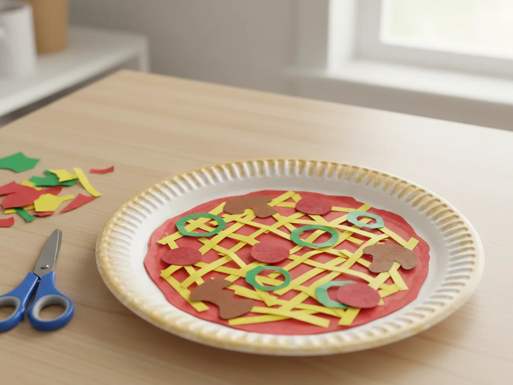
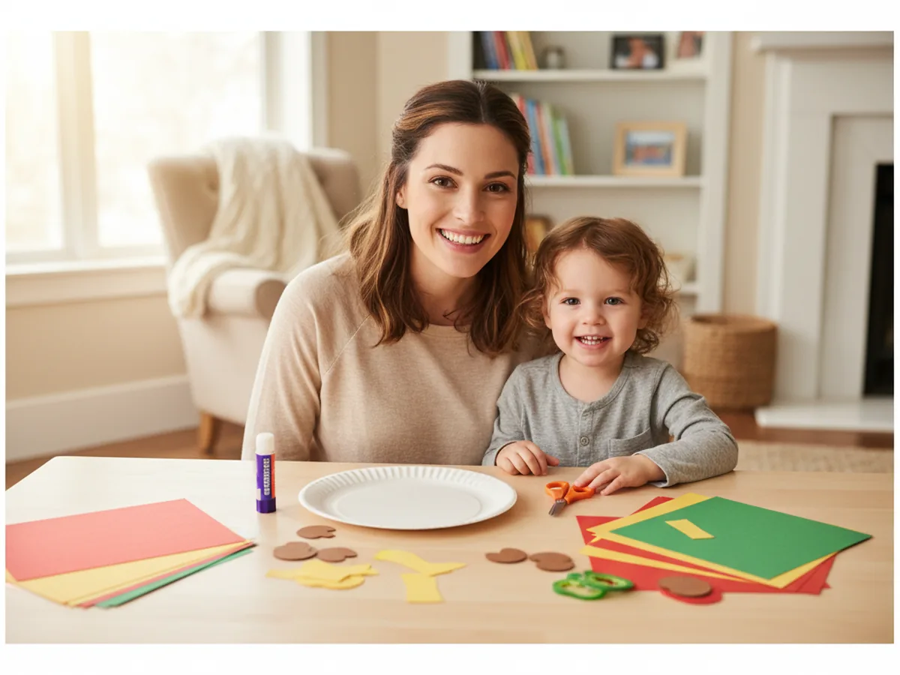
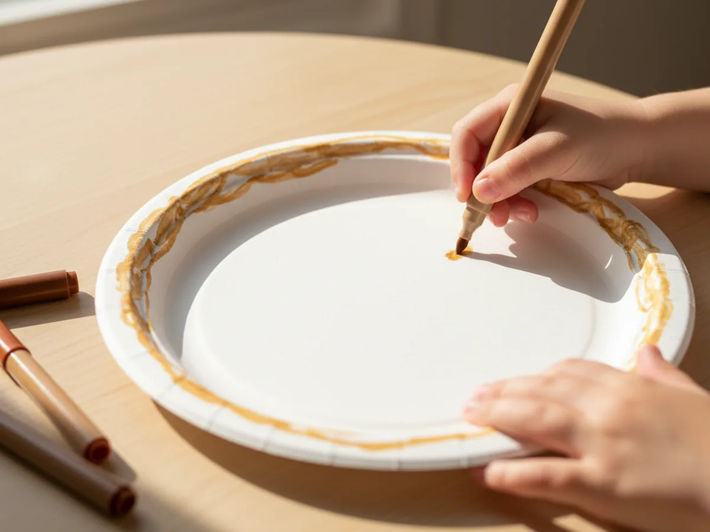
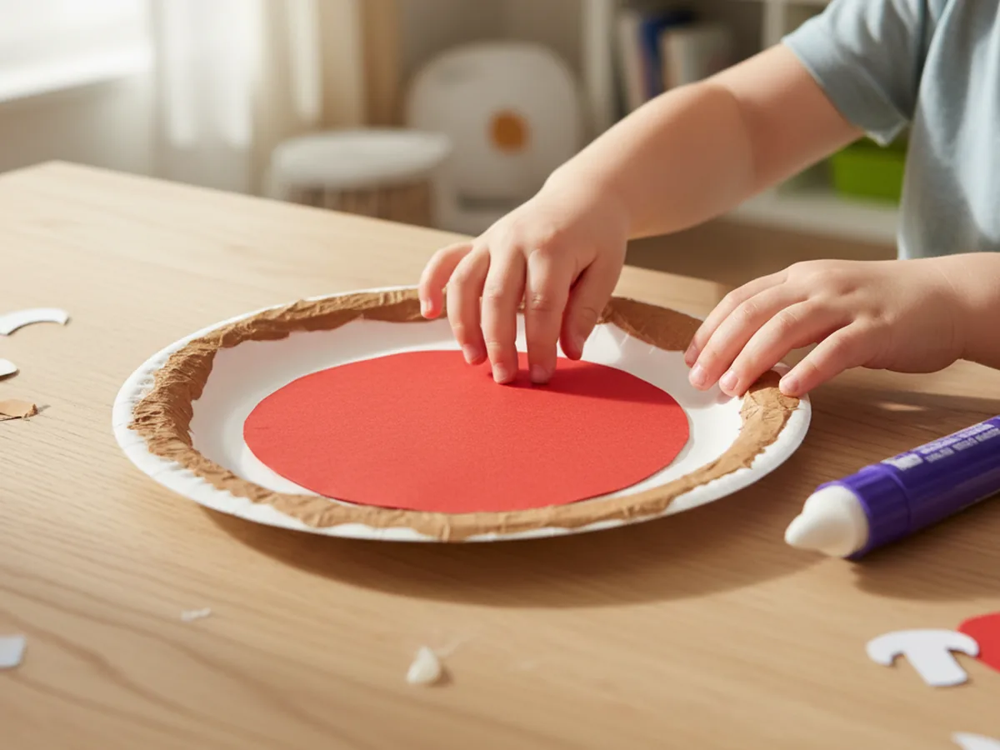
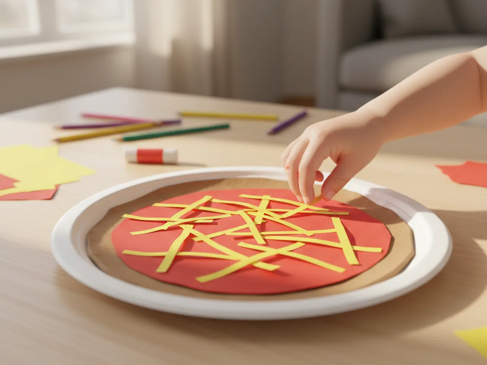
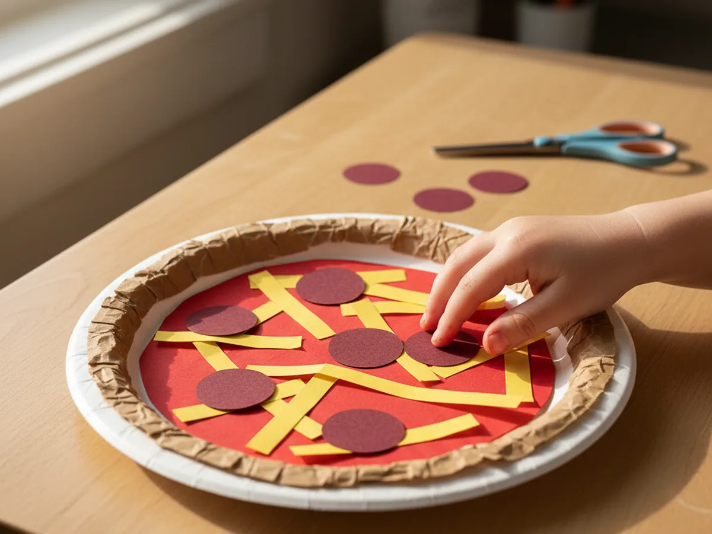
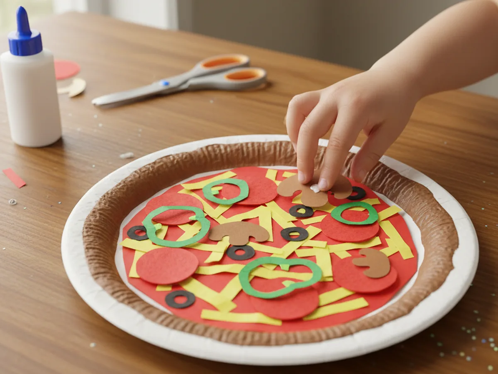
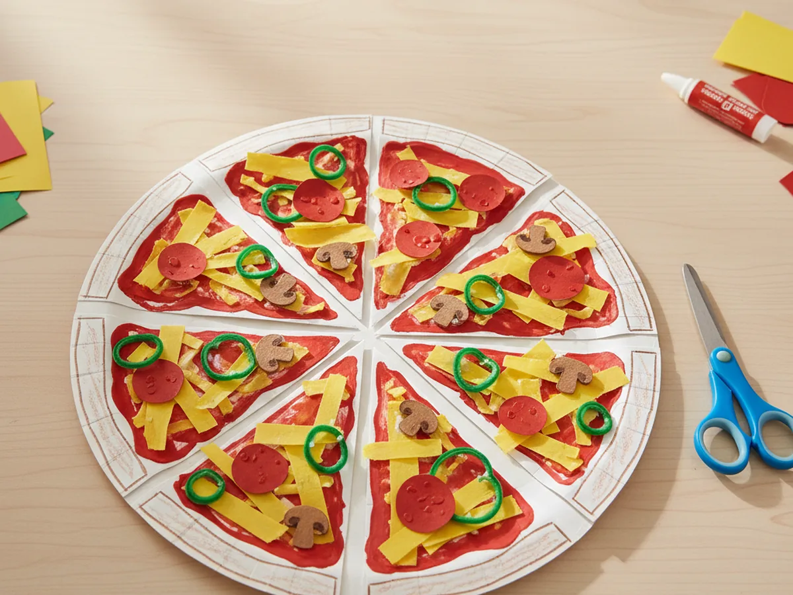
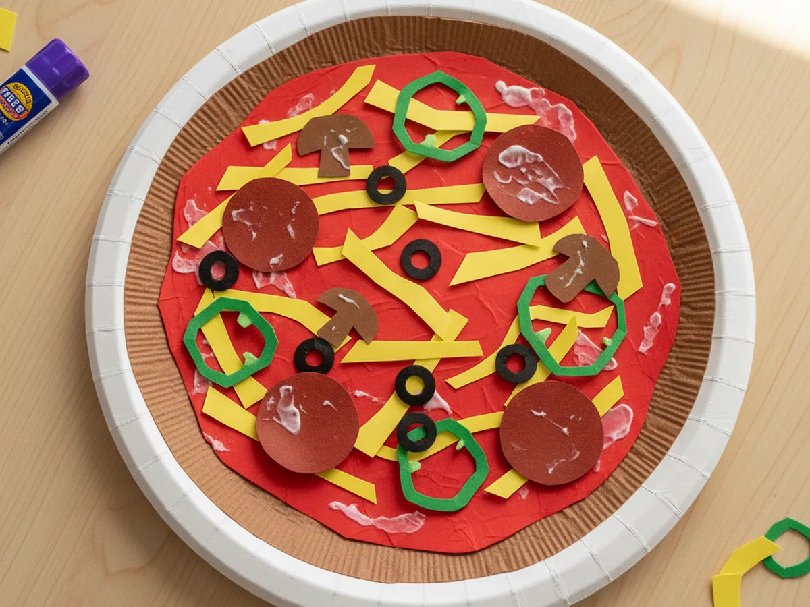

If your little one loves pizza night and lights up the second they hear the doorbell, this paper pizza craft is going to feel like magic. It uses a simple paper plate as the crust and a few sheets of construction paper for all the toppings, so the whole project comes together with stuff you probably already have on the craft shelf. The result is a sweet pretend pizza your child can decorate, slice, and play with for hours. 🍕
This paper pizza craft for kids is wonderful for any rainy afternoon, a cozy weekend morning, or a low-stress birthday activity. The toppings are completely up to your child, which means every pizza ends up gloriously different. Even toddlers can glue on the pepperoni, and bigger kids love designing the perfect veggie combo. Best of all, the slicing step at the end gives them that satisfying pizzeria-chef moment that makes the whole craft feel real.
Why Kids Love This Craft
There is something deeply joyful about pretending to make food, and pizza is right at the top of every child's favorites list. The bright colors, the round shape, and the fun of sprinkling toppings turn this paper pizza craft into a sensory pretend-play activity, not just a craft. When your child gets to choose every single topping, they feel like a tiny chef in their own kitchen.
This activity is also fantastic for little hands. Cutting circles, strips, and small shapes from construction paper builds fine motor strength and scissor skills. Lining up the toppings and pressing them onto the cheese helps with focus and hand-eye coordination. Kids who are still learning shapes or counting can name the colors and count the pepperoni out loud as they work, which makes this fun pizza paper craft sneakily educational.
Best of all, the playful slicing step turns one craft into a long pretend-play game afterward. Your child can serve slices to stuffed animals, set up a tiny pizzeria on the rug, or pretend to deliver pizzas around the house. This kind of imaginative play is exactly what tired afternoons need, and it sparks the kind of cozy together-time that screens just cannot match. 💛

What You'll Need
Here is everything you need for this easy paper pizza craft. Setting all the supplies out on the table before you start keeps the activity calm and lets your child dive right in.
- Amazon Basics Disposable Paper Plates (100 Count), plain white plates work great as the pizza base.
- Crayola Construction Paper (240 sheets, assorted colors), you mostly need red, yellow, brown, and green sheets.
- Fiskars Pointed-Tip Kids Scissors, perfectly sized for small hands and great for cutting circles.
- Elmer's All Purpose School Glue Sticks (30-pack), washable, easy to grip, and dry quickly.
- Crayola Broad Line Markers (10 classic colors), for coloring the crust edge and adding tiny details.
- A pencil, for tracing circles before cutting.
- A small bowl or cup, for tracing pepperoni circles if you do not have a circle punch.
Step-by-Step Instructions
This paper pizza craft tutorial moves through seven gentle steps that build on each other. Take your time, let your child do as much as they can, and enjoy the squishy fun of decorating a pretend pizza together.
Step 1: Prepare the Pizza Crust
Start with a plain white paper plate, which will become the pizza crust. Use a light brown or tan marker to color around the raised rim of the plate so it looks like a baked golden crust. Your child can scribble it freely, since real pizza crusts are never perfect anyway. If you want a richer look, add a few darker brown spots here and there for a "wood-fired" effect.

Step 2: Add the Tomato Sauce
Take a sheet of red construction paper and place the paper plate face down on top of it. Trace around the inside of the rim with a pencil, then cut out the red circle just inside the line. The circle should sit nicely inside the crust without covering the colored rim. Glue the red circle right onto the middle of the plate to create your pizza sauce.
If your child is still learning to cut on a curve, draw the line for them and help guide their scissors around the circle. A slightly wobbly sauce circle looks completely natural and adds to the homemade charm.

Step 3: Sprinkle on the Cheese
Now for the melted mozzarella. Cut several thin strips from a sheet of yellow construction paper, each about three inches long and a quarter of an inch wide. Have your child glue them onto the red sauce in random directions, criss-crossing them to look like pulled, melty cheese. The more strips you scatter, the cheesier your pizza will look.
If your child wants to use a paler yellow or even white paper for the cheese, that works too. Real pizza cheese comes in many shades, and there are no wrong answers in this paper pizza craft. 🧀

Step 4: Add the Pepperoni
Time for the most fun part of any pizza. Take a sheet of darker red or burgundy construction paper and trace around a small bowl or cup to make six to eight small circles. Cut each one out and let your child glue them across the cheese, spaced evenly around the pizza. If you have a circle punch, this step turns into pure joy because kids love punching out the pepperoni rounds themselves.
Some children love a pepperoni-everywhere pizza and others want only three or four neat ones. Both are wonderful. This is the perfect chance to let your child take charge of their own design.

Step 5: Add Veggie Toppings
Now your pizza gets really fun. From green construction paper, cut a few thin rings to look like green pepper slices. From brown paper, cut small wavy mushroom shapes. You can also add black paper olives, tiny purple squares for onion, or yellow corn kernels if your child loves a busy pizza. Glue each topping onto the cheese in any pattern your child likes.
This is also a sweet moment to chat about which toppings your family likes most in real life. Counting the green peppers as they go on, or naming each veggie out loud, turns this step into a low-key learning moment without it feeling like a lesson at all. ✨

Step 6: Slice the Pizza
Once all the glue has dried for a few minutes, it is time to slice. Use kid-friendly scissors to cut the paper pizza into six or eight triangular slices, just like a real pizza. For little kids, draw faint guide lines first with a pencil so they have something to follow. Cutting through the layered paper feels surprisingly satisfying, and you will probably hear the most excited "whoa" of the whole afternoon.

Step 7: Display or Play
Your paper pizza craft is officially ready. If your child wants to display the finished pizza, gently nudge the slices back together onto the plate and tape them lightly underneath. If they want to play, grab a small tray and turn the kitchen counter into a pretend pizzeria. Stuffed animals make excellent customers, and a tea-set cup of pretend soda turns the whole thing into a full restaurant scene.
Hold up the finished pizza, take a sniff, and pretend to taste it together. That little giggle when you say "mmm, my favorite slice" is exactly the moment this whole craft is for. 🍕

Variations to Try
Pizza Restaurant Set: Make three or four different pizzas in one craft session, each with different toppings. Add a paper menu with marker drawings, a paper plate sign that says "Mom's Pizzeria," and let your child take orders from the family. This turns a 30-minute craft into an entire afternoon of pretend play.
Felt Topping Upgrade: If your child loves this craft and you want a sturdier version, recreate the same design using felt squares cut into the same shapes. The toppings can stick to a felt pizza base without glue, which means your child can rearrange the toppings over and over. It is a great keeper craft for younger toddlers.
Letter and Number Pizza: Cut the pepperoni circles in pairs and write a letter or number on each one. As your child places matching pairs on the pizza, you have a sneaky little learning game built right into the craft. This works beautifully for preschoolers who love pretend play and early letter recognition.
Final Thoughts
This paper pizza craft is one of those projects that feels almost too easy for how much joy it brings. It uses simple supplies you already have, takes about 30 minutes to put together, and ends with a sweet pretend pizza your child will play with long after the glue has dried. More than anything, it gives both of you a warm, low-stress moment to be together and laugh over a slightly lopsided pepperoni or a runaway mushroom.
If your little one makes their own paper pizza, I would love to see it. Save this article on Pinterest so other craft-loving mamas can find it easily. Happy crafting!
More Crafts You'll Love
If your child loved this paper pizza craft, they will adore these other sweet pretend-food and paper crafts too: